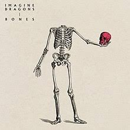

Music That Makes Me


Why Is Music Important?
Music holds immense significance not just for society, but for each of us on a personal level, because it has always been a part of what makes us human. Since ancient times, it has evolved alongside every culture, becoming a universal language of expression. Its rhythms and melodies offer something profound, a way to communicate emotions that words alone cannot capture. Music has always connected us, allowed us to tell our stories, and expressed our deepest feelings. Without it, it’s hard to imagine how our creativity, traditions, and emotional experiences would have taken shape. From the songs passed down through generations to the beats that make us move today, music has shaped how we celebrate, how we mourn, and ultimately how we live.
In our modern lives, music still plays a critical role, personally and collectively. We turn to it when we need inspiration, when we are searching for guidance through difficult times, and when we seek comfort or healing. Whether through classical symphonies, rock anthems, or the pulse of hip-hop, music has a unique way of helping us make sense of the world around us. It offers a space to escape, reflect, and recharge. More than just entertainment, it serves as a form of therapy, helping us process emotions and navigate life's complexities. Music’s ability to transcend cultural and language barriers makes it a powerful force for unity and self-discovery, continuously enriching our human experience and connecting us all.
| Song | Artist/Band | Genre | Publish Date | |
|---|---|---|---|---|
| Image | Magdalena Bay | Pop | 2024 | |
| Headlock | Imogen Heap | Pop | 2005 | |
| Curico | Kiltro | Pop | 2019 | |
| Swoon | Beach Weather | Pop | 2015 | |
| High and Low Places | Beach Weather | Pop | 2024 | |
| Staring Role | MARINA and the Diamonds | Pop | 2022 | |
| Instant Crush | Daft Punk | Electro | 2013 | |
|  | Bones | Imagine Dragons | Pop | 2022 |
| Nightcall | Kavinsky | Electro | 2013 | |
| I KNOW ? | Travis Scott | Rap | 2023 |

Why Listen?
Whether Im painting, designing, or just brainstorming new concepts, these tracks set the perfect mood, helping me tap into a flow of creativity. Beyond just fueling my art, exploring these genres has also expanded and refined my overall music taste.
Each of these genres offers something unique—Pop brings catchy beats and melodies that energize me, Electro adds an experimental edge with its pulsing rhythms, and Indie always manages to hit those deeper, emotional chords, keeping me grounded yet inspired. My playlist is a blend of all these, and I truly believe that music this diverse can inspire more than just me. That’s why I’m excited to share my recommendations with you all. Hopefully, these tracks can inspire your work or simply become part of your daily soundtrack like they are for me. Creativity often starts with the smallest spark, and for me, that spark is music.
Music has the remarkable ability to evoke emotions, shape memories, and foster empathy, creating a shared experience that transcends boundaries. Meanwhile, creativity allows us to think beyond the ordinary, encouraging innovation and problem-solving in all aspects of life. Whether through composing a song, painting a canvas, or simply exploring new ideas, embracing creativity and music enriches our lives, provides healing, and unlocks new ways to understand the world around us. In a world that can often feel chaotic and overwhelming, nurturing these passions can offer us moments of peace, clarity, and fulfillment, reminding us of the beauty and power within our own creative souls.